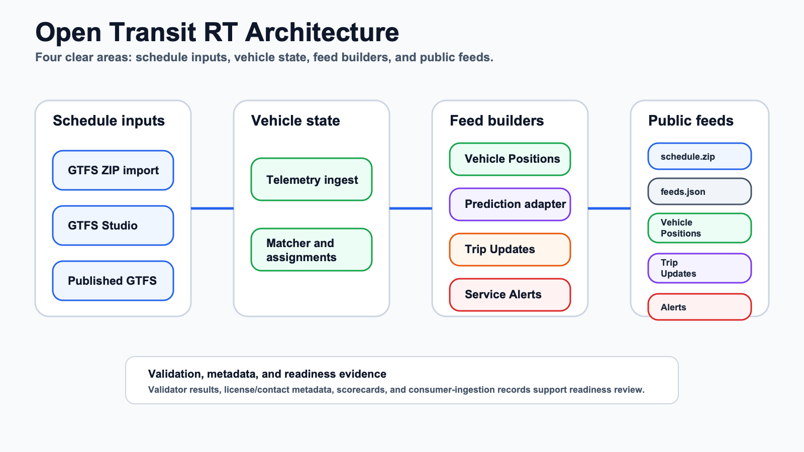

Prepare GTFS
Import a GTFS ZIP or work in GTFS Studio drafts. Draft data and published feed versions stay separate.
Lifecycle
The system separates schedule authoring, active publication, vehicle telemetry, matching, feed generation, prediction, alerts, and readiness review.
Import a GTFS ZIP or work in GTFS Studio drafts. Draft data and published feed versions stay separate.
A published feed version becomes the active schedule used by public feed builders.
The active schedule is served at /public/gtfs/schedule.zip and listed in /public/feeds.json.
Devices, sidecars, CSV replays, or adapters send observations to POST /v1/telemetry with a device bearer token.
The matcher considers service day, trip instance, shape proximity, block continuity, staleness, and manual override state. Low confidence stays unknown.
Vehicle Positions are the first high-quality realtime output and remain useful even when prediction systems are unavailable.
Trip Updates stay behind a prediction adapter. The deterministic predictor is the safe fallback path; external predictors are optional and isolated.
Service Alerts are generated from persisted alert records and share the active schedule context where applicable.
Validator health, feed health, release-candidate checks, and connector conformance show local product posture and blockers without becoming compliance evidence.
